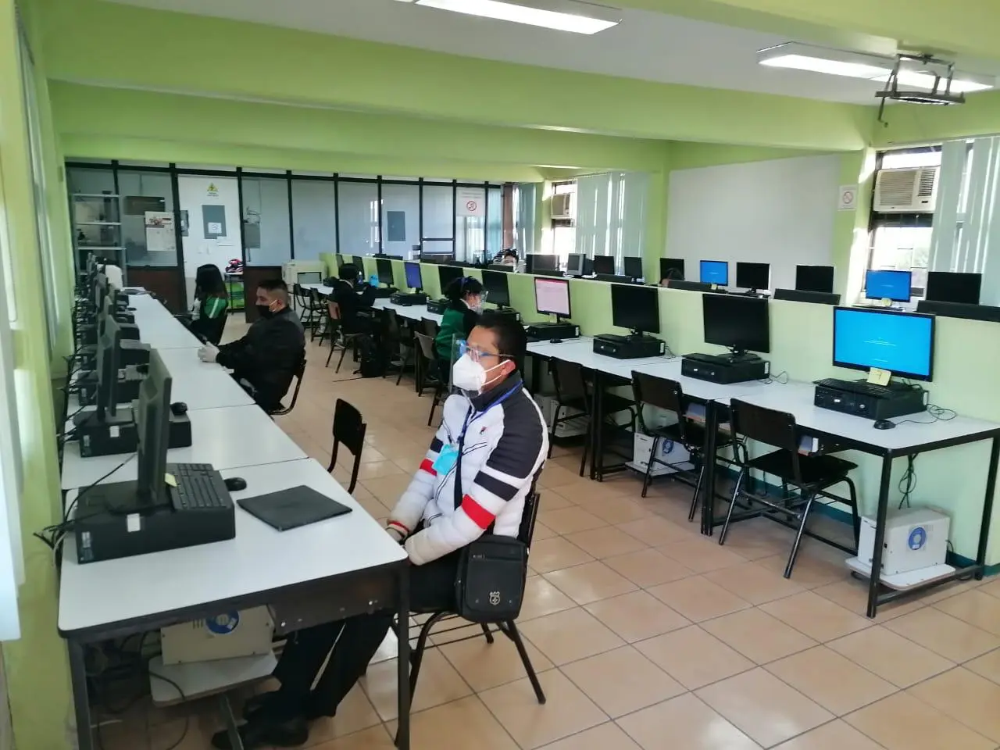
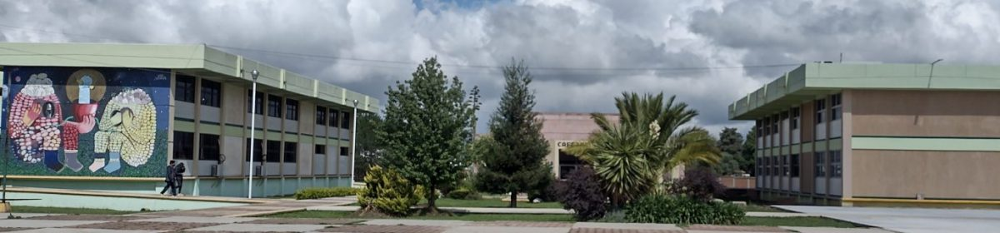
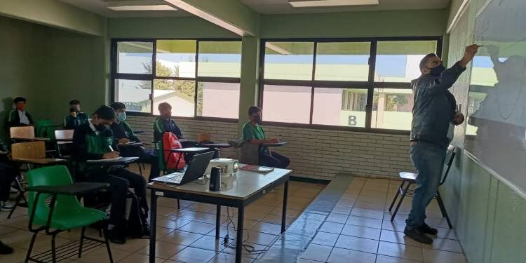
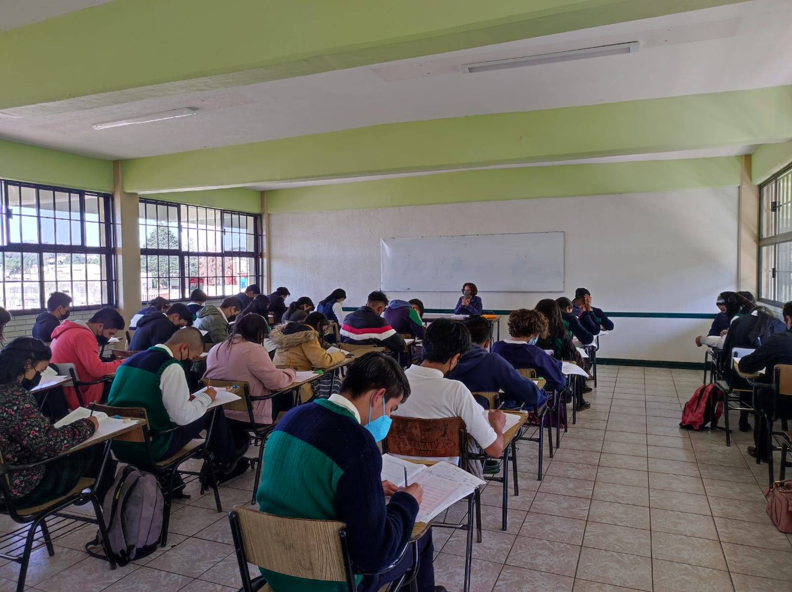

Acerca del CECyTEM
El Colegio de Estudios Científicos y Tecnológicos del Estado de México (CECyTEM), es una
institución de principios y valores que comparte la visión de que la educación dignifica a las personas y es
el motor del crecimiento económico y social. El CECyTEM brinda servicios educativos de nivel medio superior, con
el propósito de que nuestros estudiantes desarrollen sus capacidades científicas y tecnológicas. Desde su
creación en 1994, ha seguido un proceso de fortalecimiento y mejora continua, a la fecha contamos con 60
planteles ubicados estratégicamente en nuestra entidad. Nuestros planes de estudio de carácter bivalente, abren
la posibilidad de que los egresados cuenten con educación tecnológica terminal que les permita incorporarse a
una actividad productiva, o bien, continuar sus estudios de nivel superior. Con firme decisión enfrentamos los
retos actuales: Elevar la calidad educativa, ampliar la cobertura social y territorial, innovar y diversificar
la oferta educativa y promover la vinculación escuela-empresa para fortalecer la empleabilidad de nuestros
estudiantes. Te invitamos a formar parte de nuestra comunidad estudiantil para construir un Estado de México
más fuerte.
Planteles
Conoce las carreras que tenemos para ti:
Técnico en Desarrollo Organizacional
| La carrera de Técnico en Programación ofrece las competencias profesionales que permiten al estudiante realizar actividades dirigidas a: analizar, diseñar, desarrollar, instalar y mantener software de aplicación tomando como base los requerimientos del usuario. |
Técnico en Programación
|  | La carrera de Técnico en Programación ofrece las competencias profesionales que permiten al estudiante realizar actividades dirigidas a: analizar, diseñar, desarrollar, instalar y mantener software de aplicación tomando como base los requerimientos del usuario. |
Servicios para los Estudiantes
|
|
 |
Misión:Impartir educación media superior de calidad, en su modalidad de bachillerato tecnológico bivalente, con el objeto de que los egresados cuenten con educación tecnológica terminal que les permita incorporarse a una actividad productiva, o bien, continuar sus estudios de nivel superior. |
Vision:Ser la mejor opción en educación media superior en su modalidad de bachillerato tecnológico bivalente en el Sistema Nacional de los CECyTE’s, así como en el Estado de México. |
|  |  |
Servicios Escolares
De cada plantel del CECyTEM los servicios escolares son atendidos por 2 figuras. La coordinación de vinculación y el Control Escolar. El primero lleva las cuestiones de becas, servicio social, seguimiento de eventos interno y externos, así como la vinculación con la sociedad civil, empresarial y la región en donde el plantel opera. El control escolar por su parte registra y controla del proceso académico desde el ingreso hasta el egreso de cada alumno. Así como emitir los documentos escolares que certifiquen los estudios realizados.

Nota:
El plantel opera en instalaciones propias.
Ubicacion: